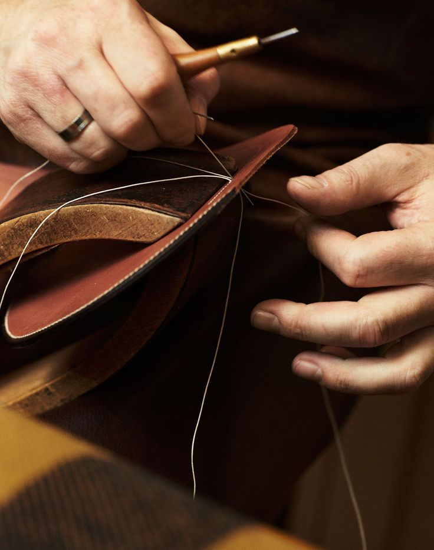

Nazenin, 2026 yılında Gebze'de küçük bir atölyede, “her gün taşınan bir çanta hem rahat hem zarif olabilmeli” düşüncesiyle yola çıktı. İlk modellerimizi arkadaşlarımız ve komşularımız için diktik. Bugün omuz, el ve sırt çantaları ile cüzdan modellerimizi aynı özenle üretmeye devam ediyoruz.
Her çantamız tasarımdan kesime, dikişten son kontrole kadar atölyemizde ekip arkadaşlarımızın elinden geçer. Sezonluk değil, uzun yıllar eskimeden kullanılacak modeller tasarlamaya odaklanıyoruz.
Renk paletimizi toprak ve pudra tonlarından seçiyoruz. Böylece çantalarımız hem günlük kıyafetlerle hem de özel günlerde kolayca uyum sağlıyor.
Her çanta atölyemizde tek tek kesilir, dikilir ve kontrol edilir.
Hafif malzemeler, yastıklı askılar ve düşünülmüş iç bölmeler kullanıyoruz.
Dayanıklı astar ve sağlam dikişlerle yıllarca kullanılacak çantalar üretiyoruz.